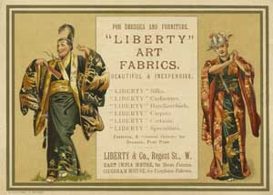

From the opening of his Regent Street shop in 1875, Liberty developed the business beyond fashion and fabrics. The first furniture known to be sold by Liberty is illustrated in 1881 in the Eastern Art catalogue which features porcelain, ‘curios’ and antiquities, alongside exotic textiles and embroideries. Chinese Blackwood furniture, carved pieces from India, China, Japan and Africa are included and there are interesting ‘Anglo Oriental’ brackets in bamboo with rather Godwin like design. 
Perhaps the most popular item was the Turkish table or coffee stool, inlaid with most intricate decoration. These tables provided an affordable entry level to exotic home furnishing which was still selling in Liberty catalogues in the 1930’s. These tables are now highly prized among collectors, with prices reaching unprecedented levels for inlaid, carved and also for Mashrabiya (Musherabehe ) work.
The new Liberty shop quickly made a good impression. Writing in the Architect, E.W. Godwin seemed excited with the Liberty store and impressed with its attractions for customers. He reports on his afternoon stroll a couple of days before Christmas in 1876
To be able to wander through a well arranged and well stocked Japanese warehouse is one of the delights of living in London. Being out for my usual stroll the other afternoon I determined to seize another delight by a visit to the Winter Exhibition of Watercolours in Pall Mall East. But hearing of a new importation of Japanese fans and that certain cases of them would be opened in a certain little shop near the top of Regent Street, I took the Anglo Japanese warehouse first. There was quite a crowd when we arrived. A distinguished traveller had buttonholed the obliging proprietor in one corner; a well known baronet, waiting to do the same, was trifling with some feather dusting brushes; two architects of well known names were posing an attendant in another corner with awkward questions; three distinguished painters with their wives blocked up the staircase ; whilst a bevy of ladies filled up the rest of the floorspace. It was some time before I could get sufficiently near to catch the eye of the master of this enchanting cave then only to learn to my disappointment, that the cases would not arrive until till late that evening. Almost in a moment the swarm of folk vanished and I was free to pick my way from ground floor to attics, for No 218 Regent Street is from front to back and top to bottom a warehouse literally crammed with objects of oriental manufacture. Godwin. E.W. Afternoon Strolls: The Architect Dec 23 1876
Some years later the The Journal of Decorative Art re affirmed this special feel and atmosphere when in 1888 they reported that;
Anyone entering unexpectedly into the arched rooms of Messrs Liberty’s premises in Regent Street would have no difficulty in imagining themselves in another country altogether. In one part hang rich Oriental draperies behind which stand vases of rare beauty, peeping out sufficiently to add colour to the whole scene. Some of the tints which are on their draperies are lovely, notably a salmon pink in one of the rooms which excels anything of the kind we have seen. Great care and trouble have been spent by the firm to add laurels to the name now so well known throughout the world.
An indication of how Arthur Liberty was able to build the profile of his store through his social networks was his collaboration in the design and supply of fabrics for the costumes of three Gilbert and Sullivan Operas; Patience in 1881, Iolanthe in 1882 and the Mikado in 1885. (The author is grateful to Little Maid for providing examples of Liberty adverts in Theatre programmes.http://http://www.arcadee.freeserve.co.uk/gnspr03.htm)The comic opera Patience, presented a very topical critique of the Aesthetic movement and featured twenty ‘lovesick maids’ whose costumes were designed by Gilbert himself, the programme mentions the Liberty Silks which he used. Looking back on this time, Sir Arthur Lasenby Liberty said;
This was the time of the Aesthetic movement, of the palmy days of the Grosvenor Gallery. The influence of the East had more to do with that movement than it is commonly given credit for. From the first to last I was closely associated with that tendency which unfortunately over reached itself, mainly owing to the eccentricities of those who took it up. I felt I was rather ‘in it’ then and I always took a box for the first night of a Gilbert and Sullivan Opera – for most of which I supplied the costumes. The House of Liberty and its founder. The Daily Chronicle 1913